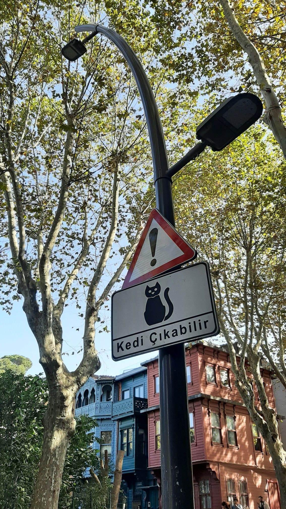
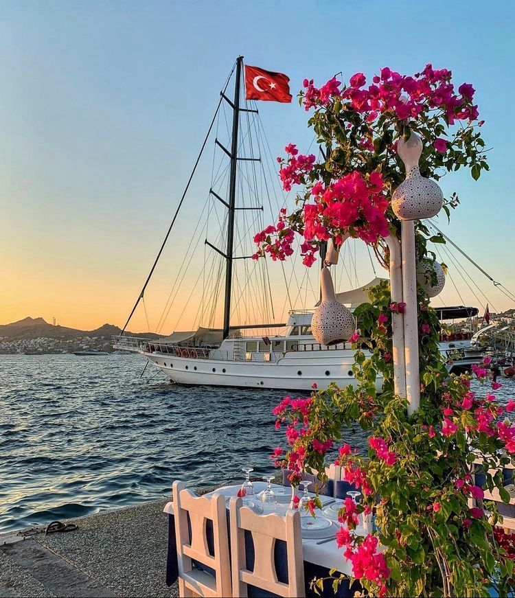
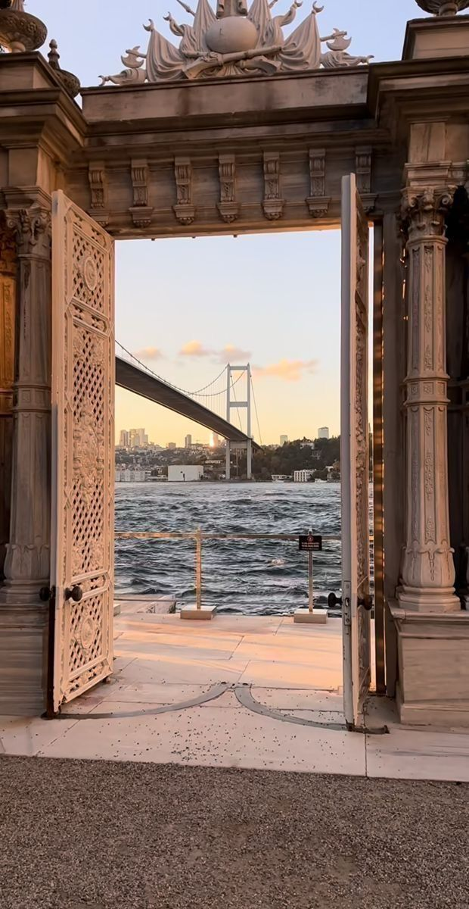

Who Am I ?
I was born in 2000 in Bursa, Turkey the city of cats! I have always been passionate about learning, exploring new things, and expressing myself through art. I took swimming lessons for 7 years, and it became a big part of my life. However, as I started spending too much time focusing on swimming, I began neglecting my studies. My father was not happy with this situation, and I made the difficult decision to quit swimming to prioritize my education. My younger sibling was born one of the most meaningful and powerful bonds I have ever experienced in life. Becoming an older sister gave me a new sense of responsibility and joy.Later, I was accepted into a Civil Engineering after passing the university entrance exam, and I studied Civil Engineering for 3.5 years. It was a challenging but valuable experience that helped shape my discipline and problem-solving skills. I am currently an honors student at Johnson County Community College, pursuing a degree in Computer Information Systems, and continuously growing both technically and personally every day.
My Story & Statement
I am a passionate Computer Science student who enjoys creating new things and expressing myself through art. I also enjoy making YouTube videos .
  Courses Taken
- Principles of Macroeconomics
- IT
- HTML & CSS Web Design
- Java Script
- Film
My Timeline
- I started school
- I attended a swimming course
- My sibling was born
- I started high school
- I got into Civil Engineering at university
- I came to the United States
- I worked as a lifeguard
- I decided to stay and study here